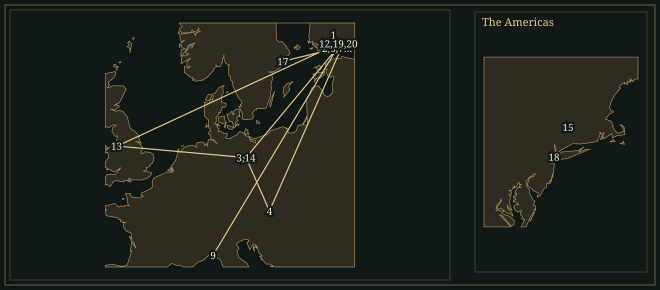

JeanSibelius
Composer who took the horn theme of his Fifth Symphony from sixteen swans he watched circling over Ainola, and who worked on the symphony for four years.
- Trained
- Wegelius in Helsinki, 1885–89; Becker in Berlin; Fuchs and Goldmark in Vienna
- Home
- Ainola, Lars Sonck’s timber house near Lake Tuusula, from 1904
- Languages
- Swedish at home; Finnish at school and in Kullervo and Luonnotar
- Output
- Seven symphonies, one violin concerto, tone poems, theatre music, songs and chamber music
Life
In Vienna in 1891, Sibelius auditioned for the Philharmonic and failed. He wanted to be a violinist; the jury found him too nervous even for an orchestral post. He was twenty-five, studying composition with Robert Fuchs and Karl Goldmark, spending money he did not have at parties and going to as much of the city’s music as he could. After hearing Bruckner’s Third Symphony he thought its author the greatest living composer. In his lodgings during the same period he was studying the rhythms of the Finnish Kalevala.
He was born in Hämeenlinna in 1865, when Finland was a grand duchy of the Russian Empire. His father, a doctor, died three years later, leaving debts. At home the family spoke Swedish; at school Janne learnt Finnish. He played chamber music with his sister Linda and brother Christian, and in 1885 went to Helsinki, nominally to study law. He was soon spending his days at Martin Wegelius’s Music Institute, where he befriended Ferruccio Busoni and worked through quartets by Haydn, Mozart and Beethoven. He took his professional name from a dead uncle’s visiting cards, which he had found. “Jean is now my musical name,” he told Uncle Pehr on 31 March 1886. After Helsinki he studied with Albert Becker in Berlin, and then in Vienna.
1892–99Kullervo to Finlandia
In Helsinki in April 1892 Sibelius conducted Kullervo, in five movements for orchestra, male chorus and two soloists. Its subject is incest, remorse and suicide, and it is sung in Finnish. The choral phrases follow the stresses of the words, at times on a single repeated note. Robert Kajanus presented him with a wreath. In June Sibelius married Aino Järnefelt, whose brothers included a painter, a writer and a musician. Her family’s enthusiasm for Finnish culture had already helped turn the Swedish-speaking student towards the language of the epic.
The young husband taught violin and theory, composed, and spent long sessions at the Hotel Kämp with Kajanus and Gallen-Kallela. Their discussions could last for days. Gallen-Kallela’s Symposium shows the men at their table in 1894, with Sibelius on the right and bottles in front of them. The following year he was at work on the four Lemminkäinen legends. In The Swan of Tuonela, a cor anglais plays a solo over divided strings; the hero’s return home is built on short repeated figures.
In 1899 Nicholas II’s February Manifesto threatened Finnish autonomy. The Press Celebrations that November raised money for journalists and protested against censorship. Sibelius wrote music for tableaux of Finnish history; the last, Finland Awakens, became Finlandia. Brass chords open it before the woodwinds introduce the hymn. Words were later set to the tune. The First Symphony, premiered the same year, opens with one clarinet over a distant timpani roll. Its string writing shows the influence of Tchaikovsky. The first movement ends with two plucked chords.
1901–07Ainola, the Violin Concerto, symphonies
He sketched part of the Second Symphony in Rapallo, Italy, in 1901. Its première in Helsinki in 1902 was another national triumph; Kajanus heard a protest against oppression in its slow movement. Sibelius’s sketchbook contains notes about Don Juan and Death. In the first movement, fragments that at first appear unrelated are gradually fitted together. The scherzo leads into the finale through a long rising transition, and the finale’s D major tune arrives at the end of it.
In 1904 the family moved to Ainola, the timber house Lars Sonck designed near Lake Tuusula. Helsinki was further away, but its debts and temptations still reached him. “Wake up Janne, wake up and see what you are!” Aino wrote on 4 December, after a drunken telephone call. He promised to change. The Violin Concerto, first performed that year, was also revised. Sibelius rewrote it for the 1905 Berlin performance under Richard Strauss, cutting one of the first movement’s two cadenzas. The remaining cadenza develops the opening theme in double-stops and rapid scales, with the orchestra silent.
The Third Symphony of 1907 dispensed with the harp and tuba. Its finale begins in fragments, from which a broad tune gradually forms and then dominates the movement. When Mahler visited Helsinki that autumn, Sibelius praised the symphony’s “strictness and style and deep logic”, as he later remembered the conversation. Mahler wanted it to encompass everything.
1908–13Illness and the Fourth Symphony
A tumour was removed from his throat in Berlin in 1908. He gave up drink and cigars for almost seven years. The Fourth Symphony followed in 1911. It begins with low strings and bassoons playing C–D–F♯–E. The tritone from C to F♯ recurs throughout the work, including in passages that begin as dances. In the slow movement the main melody is built up by degrees, each attempt extending further than the last. The finale ends in A minor. Aino recalled embarrassed smiles at the première and few visitors to the dressing room.
1915–19The Fifth Symphony
On 21 April 1915 sixteen swans flew over Ainola. “One of the great experiences of my life! God, how beautiful,” Sibelius wrote in his diary, noting an idea that he used in the finale of the Fifth Symphony. Horns swing between widely spaced notes, with woodwinds above and fast strings below. He conducted the first version on his fiftieth birthday, 8 December 1915, a national celebration in Finland. He then went on revising.
The revision of 1916 joined the first two movements; another followed in 1919. In the finished score a horn call opens a movement whose pace gradually quickens until it has become the scherzo. The finale ends on six chords separated by silences. The years of revision covered a world war, the loss of foreign royalties, Finnish independence and civil war. In 1918 the family temporarily left Ainola for his brother Christian’s home at Lapinlahti Hospital in Helsinki.
1923–26Sixth and Seventh Symphonies, Tapiola
The Sixth (1923) begins with interlocking string lines in D Dorian, whose B♮ raises the sixth degree of the usual minor scale. It ends quietly. The Seventh, premiered in Stockholm in 1924 as Fantasia sinfonica, lasts about twenty minutes and is in one movement. A trombone plays its C major theme above the orchestra three times; between those statements the music speeds up, takes on dance rhythms and slows again, without a break. Tapiola, commissioned by Walter Damrosch and first played in New York in 1926, is built from a small number of related figures. Near the end the strings play a storm passage.
After 1926The fire at Ainola
For years Serge Koussevitzky waited for another symphony. Sibelius revised older works, made arrangements and worked on the Eighth. In the 1940s manuscripts were burned at Ainola. Aino recalled the change afterwards: “my husband appeared calmer and his attitude was more optimistic.” What was burned is not known. Performances and recordings carried his music abroad while he stayed at home, received visitors and answered letters. He died at Ainola on 20 September 1957, thirty-one years after Tapiola.
Places

All 20 places, with sources
- Hämeenlinna · 8 December 1865 · born
Born into a Swedish-speaking family.
- Helsinki · 1885–1889 · studied
Studied with Martin Wegelius at the Helsinki Music Institute.
- Berlin · 1889–1890 · studied
Studied composition with Albert Becker.
- Vienna · 1890–1891 · studied
Studied with Robert Fuchs and Karl Goldmark.
- Porvoo · 1891 · heard
Heard the runic singer Larin Paraske.
- Helsinki · 1891–1904 · lived
Returned to Finland, married Aino Järnefelt and worked as a composer and teacher.
- Helsinki · 28 April 1892 · premiere
Conducted Kullervo. Kullervo.
- Helsinki · 1899 · premiere
Introduced his First Symphony and the original Finlandia music. Symphony No. 1; Finlandia.
- Rapallo · 1901 · lived
Sketched music that entered the Second Symphony. Symphony No. 2.
- Helsinki · 8 March 1902 · premiere
Conducted the Second Symphony. Symphony No. 2.
- Helsinki · 8 February 1904 · premiere
Viktor Nováček introduced the original Violin Concerto. Violin Concerto: original version.
- Ainola · September 1904 – 1957 · lived
Moved with his family to the house near Järvenpää.
- Liverpool · 1905 · travelled
Conducted during his first British concert visit.
- Berlin · 19 October 1905 · premiere
Karl Halíř played the revised Violin Concerto under Richard Strauss. Violin Concerto: revised version.
- Norfolk Connecticut · 4 June 1914 · premiere
Conducted The Oceanides during his only American visit. The Oceanides.
- Helsinki · 8 December 1915 · premiere
Conducted the first version of the Fifth Symphony on his fiftieth birthday. Symphony No. 5: original version.
- Stockholm · 24 March 1924 · premiere
Conducted the Seventh Symphony as Fantasia sinfonica. Symphony No. 7.
- New York City · 26 December 1926 · premiere
Walter Damrosch conducted Tapiola. Tapiola.
- Ainola · 1957 · buried
Buried in the garden, where Aino was later buried beside him.
- Ainola · 20 September 1957 · died
Died at home.
Influences
Teachers, encounters and borrowed music, each with its account and sources in the Web of Influence.
Influences received
Influences passed on
The sound
Formation of themes
Sibelius sometimes presents a theme in full only late in a movement. In the Third Symphony’s finale, fragments of melody pass between instruments before the broad concluding tune is stated in full. In the Fourth’s slow movement the melody is presented in successive partial statements, each longer than the last, and appears complete only near the end.
Harmony and mode
The Fourth begins with C–D–F♯–E in the low strings and bassoons, a phrase outlining the tritone C–F♯. The Sixth opens with the strings moving through Dorian notes, including B♮. Both works keep a home note. In the Fourth, an oboe tune also contains a tritone, F–B, which returns later in harsher form.
Changes of tempo
The first movement of the Fifth turns into a scherzo without a break. The tempo quickens, the beats regroup, and woodwind figures heard earlier at a slower pace return in dance rhythm. In the finale the horns play the swan theme in slow note values while the strings move much faster above a common beat.
Orchestration
Sibelius often gave a whole passage to one instrument. The First begins with a clarinet above a timpani roll; The Swan of Tuonela is scored around the cor anglais; in the Seventh the trombone returns several times over a reduced texture. Divided strings and tremolos accompany these solo instruments without covering them. In the large climaxes individual instruments can still be heard.
Held bass notes
Sibelius often holds the bass in place while the upper instruments move. At the start of the Fourth, some double basses hold C under the F♯. Near the end of the Fifth, the bass descends to E♭ after a delay, arriving on the note under the great horn theme.
Endings
Sibelius gave each symphony a different ending. The First ends with two plucked chords; the Fourth ends on a plain A minor chord; the Fifth ends with six loud chords separated by silences. In the Seventh the rise from B to C is held back until the end.
Works
A selection from the composer’s works.
- 1891–92KullervoOp. 7Soprano, baritone, male chorus and orchestraThe young composer’s breakthrough in Helsinki. Its five movements draw on the Kalevala, and the long third movement tells of Kullervo’s disastrous encounter with his sister.
- 1895–96; revised laterLemminkäinen — Four LegendsOp. 22OrchestraThe cor anglais has the solo in The Swan of Tuonela; Lemminkäinen’s Return is built on short, repeated figures. Sibelius continued revising the legends and their order for decades.
- 1898–99; revised 1900Symphony No. 1 in E minorOp. 39OrchestraThe clarinet’s opening solo returns in the finale, enlarged for strings. Both outer movements end with two plucked chords.
- 1899–1900FinlandiaOp. 26OrchestraWritten for the 1899 Press Celebrations, which were held in defiance of Russian censorship. Its hymn was first played without words, by the woodwinds and then the strings.Recordings in the Hall
- 1901–02Symphony No. 2 in D majorOp. 43OrchestraSketches made in Rapallo link the slow movement to Don Juan and Death. The scherzo’s rising bridge opens directly into the D major finale.Recordings in the Hall
- 1903–04; revised 1905Violin Concerto in D minorOp. 47Violin and orchestraSibelius cut a whole cadenza when he revised the first movement; the cadenza that remains develops the opening theme. The original version has been recorded.
- 1904–07Symphony No. 3 in C majorOp. 52OrchestraThree movements, without harp or tuba. In the finale, scattered figures gradually come together into a broad, firm tune.
- 1910–11Symphony No. 4 in A minorOp. 63OrchestraThe opening C–F♯ tritone recurs in all four movements. Each movement ends quietly, and the last ends in A minor.
- 1915; revised 1916 and 1919Symphony No. 5 in E♭ majorOp. 82OrchestraOver three versions the work went from four movements to three. In the finale the horns play the swan theme; the symphony ends with six separated chords.
- 1918–23Symphony No. 6Op. 104OrchestraThe opening string writing uses the Dorian scale, and the brass are used sparingly throughout. The last of the four movements ends quietly in D minor.
- 1918–24Symphony No. 7 in C majorOp. 105OrchestraFirst heard as Fantasia sinfonica in Stockholm. A trombone theme returns three times within one continuous movement.
- 1926TapiolaOp. 112OrchestraWalter Damrosch commissioned this forest music for New York. The ideas in the score, including the violent storm, grow out of the opening figure in the strings.
In the score
Short examples, engraved and playable.
Modal hearingD minor and D Dorian — schematic
Layered orchestral timeMoving line over a pedal point: diagram
Sister arts

His mother has gathered Lemminkäinen’s scattered body beside the river of death; the swan is still afloat behind her. Gallen-Kallela and Sibelius drew on the same Kalevala story, the composer in his four legends of 1896, the painter a year later.

Gallen-Kallela, Oskar Merikanto, Robert Kajanus and Sibelius, from left to right. The meetings at the Hotel Kämp mixed arguments about art with drinking that could continue for days. The picture helped fix Sibelius’s reputation as a drinker and made borrowing money harder for him. Kajanus remained the conductor who took the music abroad.

Kullervo has broken his father’s knife on a stone baked into his bread, and he raises his fist. Sibelius’s Kullervo, written seven years earlier, follows the same hero to incest and suicide. Gallen-Kallela painted the earlier episode, when the knife, a family heirloom, breaks in his hand.
Recommended recordings
- Symphonies Nos. 1–7 · KullervoLahti Symphony Orchestra, Osmo VänskäBISA fine first cycle. The woodwinds are clearly audible, and the strings’ repeated figures are sharply articulated.
- Symphony No. 5: original and final versionsLahti Symphony Orchestra, Osmo VänskäBIS, BIS-CD-863Couples the 1915 original version of the symphony with the 1919 final version.
- Violin ConcertoJascha Heifetz, Chicago Symphony Orchestra, Walter HendlRCA Victor · 1959Very brisk tempi, with a singing line kept through every technical difficulty. The finale is played with bite; Heifetz extends its last ascending scale beyond the note Sibelius wrote.
Lineage
Vaughan Williams dedicated his Fifth Symphony to Sibelius “without permission”. The symphony shares with Sibelius long-held bass notes and short figures that grow into long paragraphs. Sibelius’s own models included Beethoven’s quartets, the symphonies he heard in Vienna and the Finnish singers he sought out in Karelia. Saariaho, also Finnish and much later, wrote in a different harmonic language.
Further reading
- Daniel M. Grimley, Jean Sibelius: Life, Music, Silence (Reaktion Books, 2021). biography
Places the music beside architecture, literature, politics and visual art, and discusses the late silence.
- James Hepokoski, Sibelius: Symphony No. 5 (Cambridge University Press, 1993). study
Traces composition and revision, analyses the final version, and compares the composer’s tempo indications with recordings.
- Sibelius.fi, ‘The war and the fifth symphony 1915–1919’ (online chronology). reference
A dated account of the Fifth Symphony’s successive versions and the wartime circumstances of its composition.
Cite this page
Contrapunctus. “Jean Sibelius.” Accessed 20 October 2026. https://mottopanikeiku.github.io/contrapunctus/composers/sibelius.html.
@misc{contrapunctus-composers-sibelius,
author = {{Contrapunctus}},
title = {Jean Sibelius},
howpublished = {\url{https://mottopanikeiku.github.io/contrapunctus/composers/sibelius.html}},
note = {Accessed 2026-10-20}
}